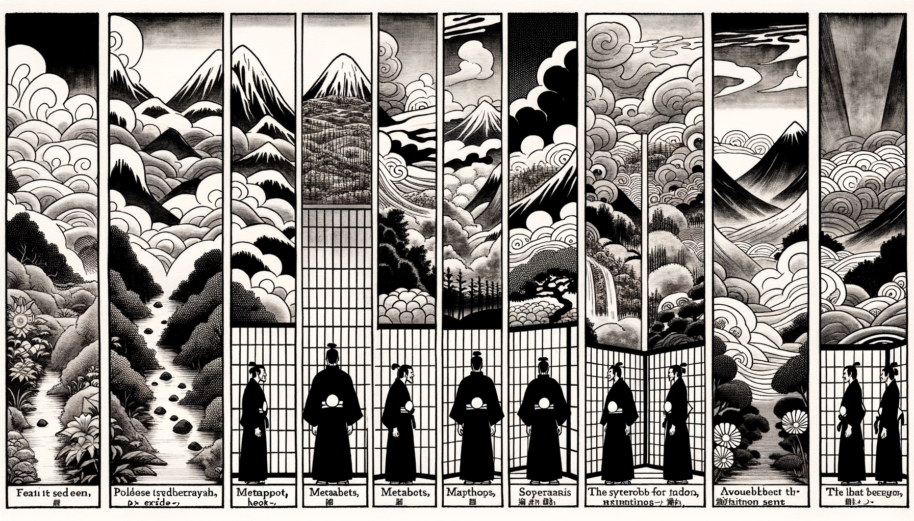

七十五巻 巻一覧
正法眼藏第39 嗣書
本ページは各巻の紹介ページです。tools/gen_web_volumes.py が doc/正法眼蔵.txt から要点の短い抜粋を載せています（全文の引用ではありません）。
出典（原文）: https://shomonji.or.jp/zazen/doc/genzou.html
原文・現代語訳の全文は 全文ページを参照してください。
この巻の紹介（概要）
道元『正法眼蔵』七十五巻の第39篇「嗣書」です。禅籍・経典への引用や語の行間が重なりやすいので、一度ですべてを要約に還元しない読み方を推奨します。問答 Bot では巻スコープにこの題名を含めると応答が安定しやすいことがあります。
語彙の足場
- 題名語：巻題「嗣書」は、道元が本章で特に扱う論点の看板です。辞書義だけに固定せず、原文中の用例で意味を確かめます。
- 引用と典故：公案・経文の引用は、一字一句の照応（何に答えているか）を押さえると全体が見えやすくなります。
- 学び方：抜粋だけでも音読し、分からない箇所は印を付けて後から問うとよいです。
原文（要点の抜粋）
当巻の冒頭付近からの短い抜粋です。長い引用は載せていません。全文は全文ページを参照してください。出典はリポジトリ内 doc/正法眼蔵.txt です。原文の参照元: https://shomonji.or.jp/zazen/doc/genzou.html
佛佛かならず佛佛に嗣法し、祖祖かならず祖祖に嗣法する、これ證契なり、これ單傳なり。このゆゑに無上菩提なり。佛にあらざれば佛を印證するにあたはず。佛の印證をえざれば、佛となることなし。佛にあらずよりは、たれかこれを最尊なりとし、無上なりと印することあらん。
佛の印證をうるとき、無師獨悟するなり、無自獨悟するなり。このゆゑに、佛佛證嗣し、祖祖證契すといふなり。この道理の宗旨は、佛佛にあらざればあきらむべきにあらず。いはんや十地等覺の所量ならんや。いかにいはんや經師論師等の測度するところならんや。たとひ爲説すとも、かれらきくべからず。
佛佛相嗣するがゆゑに、佛道はただ佛佛の究盡にして、佛佛にあらざる時節あらず。たとへば、石は石に相嗣し、玉は玉に相嗣することあり。菊も相嗣あり、松も印證するに、みな前菊後菊如如なり、前松後松如如なるがごとし。かくのごとくなるをあきらめざるともがら、佛佛正傳の道にあふといへども、いかにある道得ならんとあやしむにおよばず。佛佛相嗣の祖祖證契すといふ領覽あることなし。あはれむべし、佛種族に相似なりといへども、佛子にあらざることを、子佛にあらざることを。
曹谿あるとき衆にしめしていはく、七佛より慧能にいたるに四十祖あり、慧能より七佛にいたるに四十祖あり。
この道理、あきらかに佛祖正嗣の宗旨なり。いはゆる七佛は、過去莊嚴劫に出現せるものあり、現在賢劫に出現せるもあり。しかあるを、四十祖の面授をつらぬるは、佛道なり、佛嗣なり。
しかあればすなはち、六祖より向上して七佛にいたれば四十祖の佛嗣あり。七佛より向下して六祖にいたるに四十佛の佛嗣なるべし。佛道祖道、かくのごとし。證契にあらず、佛祖にあらざれば、佛智慧にあらず、祖究盡にあらず。佛智慧にあらざれば、佛信受なし。祖究盡にあらざれば、祖證契せず。しばらく四十祖といふは、ちかきをかつかつ擧するなり。
これによりて、佛佛の相嗣すること、深遠にして、不退不轉なり、不斷不絶なり。その宗旨は、釋迦牟尼佛は七佛已前に成道すといへども、ひさしく迦葉佛に嗣法せるなり。降生より三十歳、十二月八日に成道すといへども、七佛以前の成道なり。諸佛齊肩、同時の成道なり。諸佛以前の成道なり、一切の諸佛より末上の成道なり。
さらに迦葉佛は釋迦牟尼佛に嗣法すると參究する道理あり。この道理をしらざるは、佛道をあきらめず。佛道あきらめざれば佛嗣にあらず。佛嗣といふは、佛子といふことなり。
釋迦牟尼佛、あるとき阿難にとはしむ、過去諸佛、これたれが弟子なるぞ。
釋迦牟尼佛いはく、過去諸佛は、これ我釋迦牟尼佛の弟子なり。
諸佛の佛義、かくのごとし。この諸佛に奉覲して、佛嗣し、成就せん、すなはち佛佛の佛道にてあるべし。
この佛道、かならず嗣法するとき、さだめて嗣書あり。もし嗣法なきは天然外道なり。佛道もし嗣法を決定するにあらずよりは、いかでか今日にいたらん。これによりて、佛佛なるには、さだめて佛嗣佛の嗣書あるなり、佛嗣佛の嗣書をうるなり。その嗣書の爲體は、日月星辰をあきらめて嗣法す、あるいは皮肉骨髓を得せしめて嗣法す。あるいは袈裟を相嗣し、あるいは拄杖を相嗣し、あるいは松枝を相嗣し、あるいは拂子を相嗣し、あるいは優曇花を相嗣し、あるいは金襴衣を相嗣す。靸鞋の相嗣あり、竹箆の相嗣あり。
図解（4コマ・AI生成）
教義の根拠は原文・出典に従い、漫画は比喩の補助に留めてください。

深掘り（読解のコツ）
- 道元文は定義の羅列に見えても、多くの場合誤解への遮断と正伝の姿勢が背骨になっています。
- 「当体」「現成」「即」などの語が出たら、その巻独自の差別相にどう接続しているかをメモしておくとよいです。